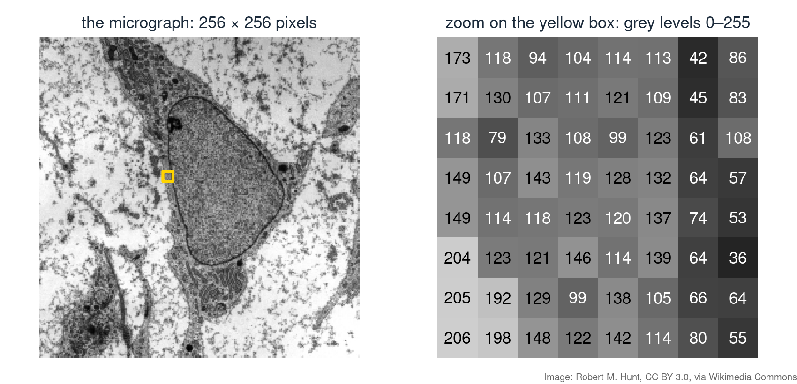
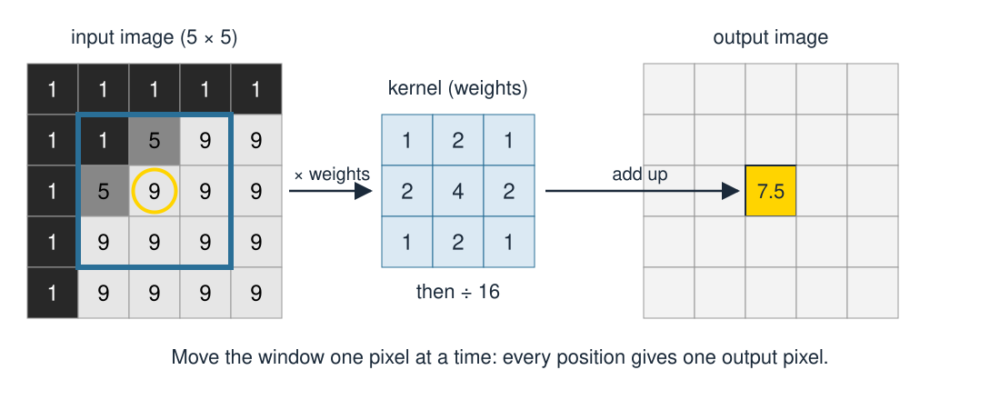
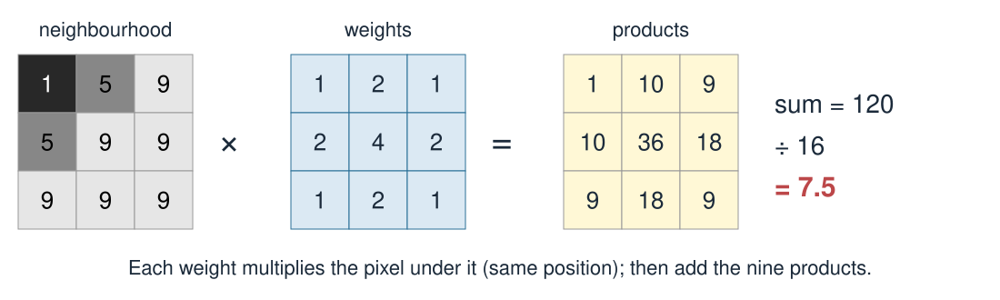
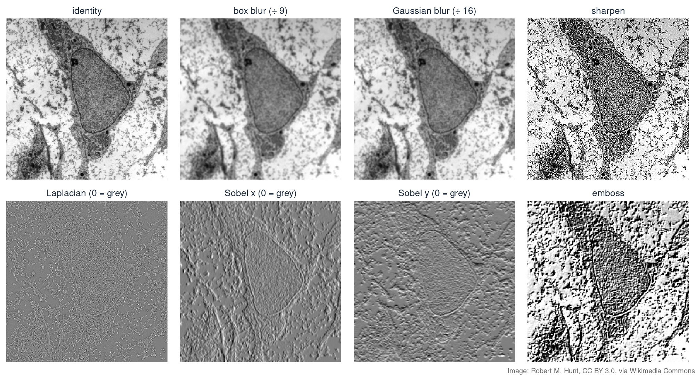
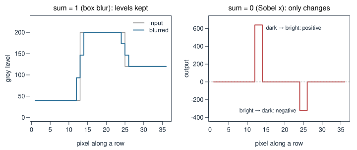
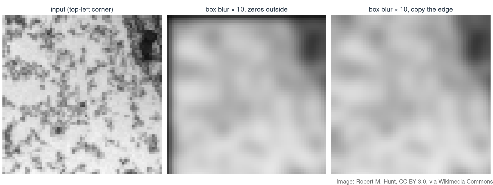
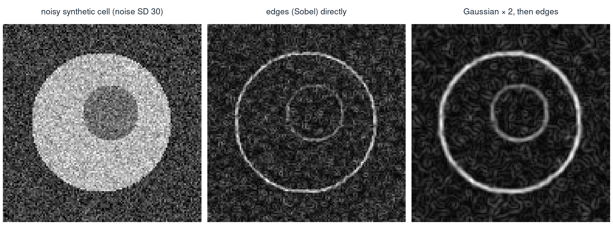
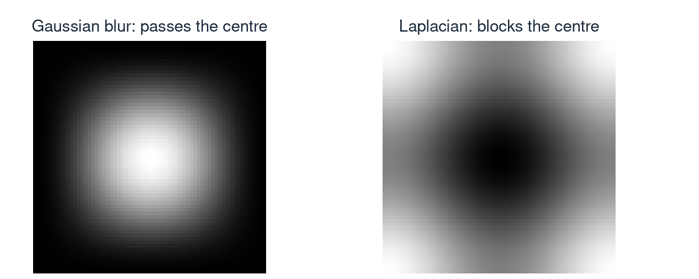

Extra material — Image filters: 3×3 kernels
In Transforming images with matrices, an image was a grid of numbers that we moved around. Today we change the numbers themselves, using the pixels nearby.
A greyscale image is a matrix: one number per pixel, here from 0 (black) to 255 (white).

In the zoom, the dark column of numbers (42, 45, 61, …) is the nuclear envelope. To a computer, “an edge” is nothing more than numbers that change quickly from one pixel to the next.

The output is a new image of the same size. The input is never changed along the way.

The same 3 × 3 neighbourhood with other kernels:
| Kernel | Weights | Weighted sum | Output |
|---|---|---|---|
| box blur | all 1, then ÷ 9 | 65 | 65 ÷ 9 ≈ 7.2 |
| Gaussian blur | 1 2 1 / 2 4 2 / 1 2 1, then ÷ 16 | 120 | 7.5 |
| sharpen | 0 −1 0 / −1 5 −1 / 0 −1 0 | 45 − 28 | 17 |
| Laplacian (edges) | 0 1 0 / 1 −4 1 / 0 1 0 | 28 − 36 | −8 |
Box blur: the plain average of the 9 pixels. \[\tfrac19\begin{bmatrix} 1 & 1 & 1\\ 1 & 1 & 1\\ 1 & 1 & 1 \end{bmatrix}\]
Gaussian blur: a weighted average, with most weight in the centre. \[\tfrac1{16}\begin{bmatrix} 1 & 2 & 1\\ 2 & 4 & 2\\ 1 & 2 & 1 \end{bmatrix}\]
\[\underbrace{\begin{bmatrix} 0 & -1 & 0\\ -1 & 5 & -1\\ 0 & -1 & 0 \end{bmatrix}}_{\text{sharpen}} = \underbrace{\begin{bmatrix} 0 & 0 & 0\\ 0 & 1 & 0\\ 0 & 0 & 0 \end{bmatrix}}_{\text{identity: the original}} - \underbrace{\begin{bmatrix} 0 & 1 & 0\\ 1 & -4 & 1\\ 0 & 1 & 0 \end{bmatrix}}_{\text{Laplacian: the edges}}\]
Laplacian \[\begin{bmatrix} 0 & 1 & 0\\ 1 & -4 & 1\\ 0 & 1 & 0 \end{bmatrix}\] neighbours minus centre: spots and outlines, in any direction
Sobel x \[\begin{bmatrix} -1 & 0 & 1\\ -2 & 0 & 2\\ -1 & 0 & 1 \end{bmatrix}\] right minus left: vertical edges
Sobel y \[\begin{bmatrix} -1 & -2 & -1\\ 0 & 0 & 0\\ 1 & 2 & 1 \end{bmatrix}\] below minus above: horizontal edges


| Sum of the weights | On a flat region | Examples | Kind of filter |
|---|---|---|---|
| 1 | brightness kept | identity, blurs, sharpen, emboss | smoothing or enhancing |
| 0 | output 0 | Laplacian, Sobel x, Sobel y | detects change (edges) |
| anything else | brightness × sum | e.g. box of ones without ÷ 9 | divide by the sum to fix |
At the edge of the image, part of the 3 × 3 window falls outside. Three common choices:


filter3 <- function(img, k) {
nr <- nrow(img); nc <- ncol(img)
p <- img[c(1, 1:nr, nr), c(1, 1:nc, nc)] # copy the edge pixels outward
out <- matrix(0, nr, nc)
for (i in 1:nr) for (j in 1:nc)
out[i, j] <- sum(k * p[i:(i + 2), j:(j + 2)]) # weights × neighbourhood, added up
out
}
img5 <- matrix(c(1, 1, 1, 1, 1,
1, 1, 5, 9, 9,
1, 5, 9, 9, 9,
1, 9, 9, 9, 9,
1, 9, 9, 9, 9), 5, byrow = TRUE)
gauss <- matrix(c(1, 2, 1, 2, 4, 2, 1, 2, 1), 3, byrow = TRUE) / 16
filter3(img5, gauss)[3, 3]
# [1] 7.5k * p[...] multiplies entry by entry (not %*%), and sum() adds the nine products. The padded matrix p has one extra row and column on every side, so p[i:(i + 2), j:(j + 2)] is the neighbourhood of pixel [i, j].

How strongly a kernel lets through each spatial frequency (centre = smooth parts, corners = fine detail):
Convolution in image space is multiplication in frequency space: sliding a kernel over the image does the same as multiplying the image’s spectrum by the kernel’s response.
| Idea | In one line |
|---|---|
| Image | a grid of numbers, here 0–255 |
| Kernel | a 3 × 3 grid of weights |
| Filtering | each output pixel = weighted sum of its 3 × 3 neighbourhood |
| Sum of weights = 1 | brightness kept: blurs, sharpen, emboss |
| Sum of weights = 0 | responds only to change: Laplacian, Sobel |
| Border | zeros, copy the edge, or skip |
| Noise | edge kernels amplify it: blur first |
| Fourier | blur = low-pass, edges = high-pass; convolution = multiplication of spectra |
Same nine-number recipe, very different results: the weights are the whole story.